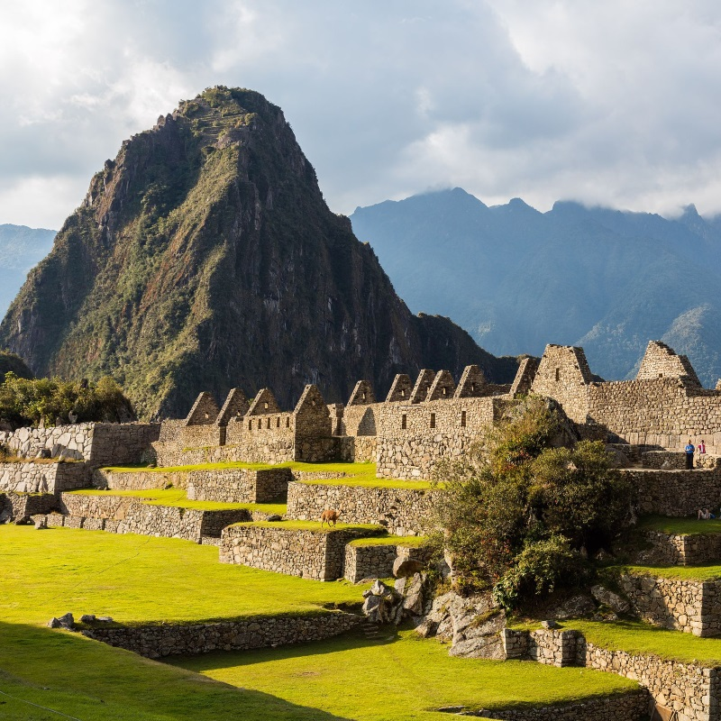

Machu Picchu to zaginione miasto Inków ukryte w peruwiańskich Andach. Powstało prawdopodobnie w II połowie XV w., a odkrył je w 1911r. amerykański odkrywca Hiram Bingham. Było miejscem kultu słońca i sanktuarium kobiet zwanych Dziewicami Słońca. W Machu Picchu nie mieszkali zwykli ludzie. Zarezerwowane było wyłącznie dla największych – arystokratów, żołnierzy, kapłanów i opiekunów świątyń. Machu Picchu to prawdopodobnie najpiękniejsze miasto, jakie stworzyła starożytna cywilizacja Inków – pełne przepięknych ogrodów i tarasów, wspaniałych budowli i pałaców. Idealnie ukryte i wkomponowane w zbocza majestatycznych Andów zachwyca po dziś dzień.
